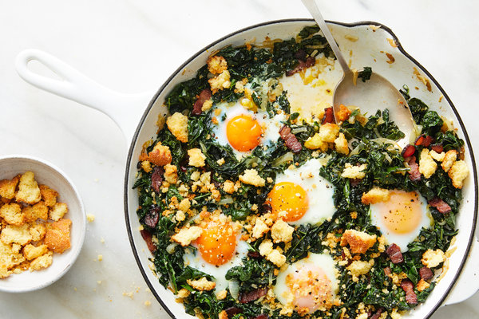
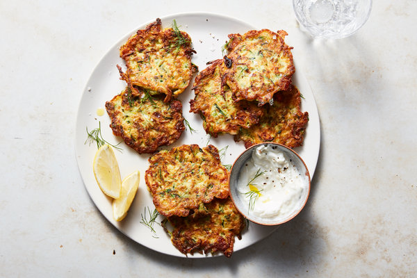
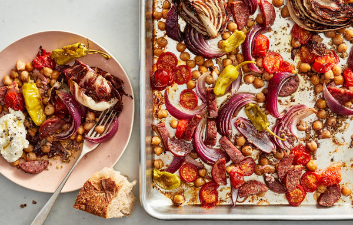
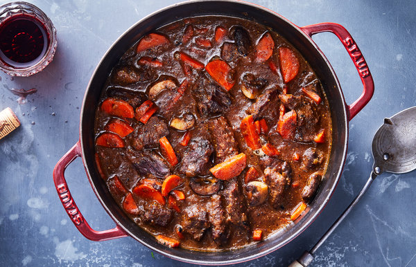
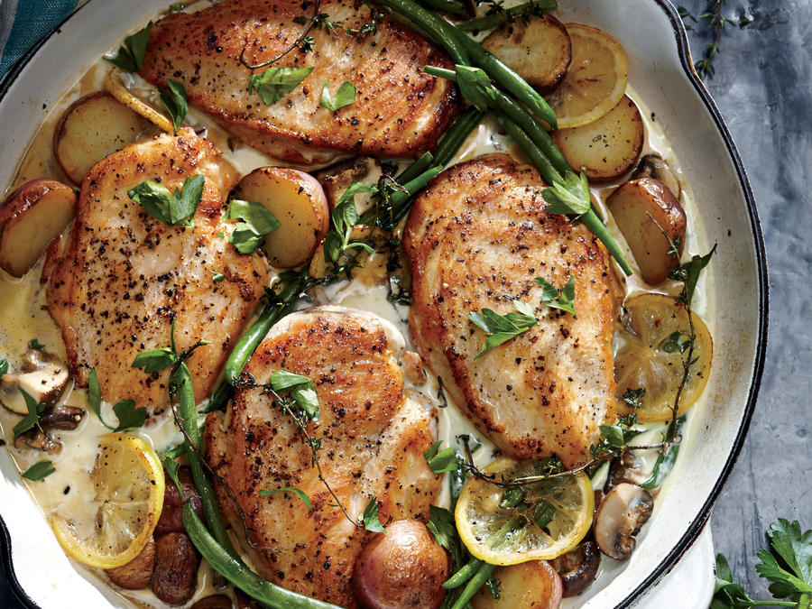
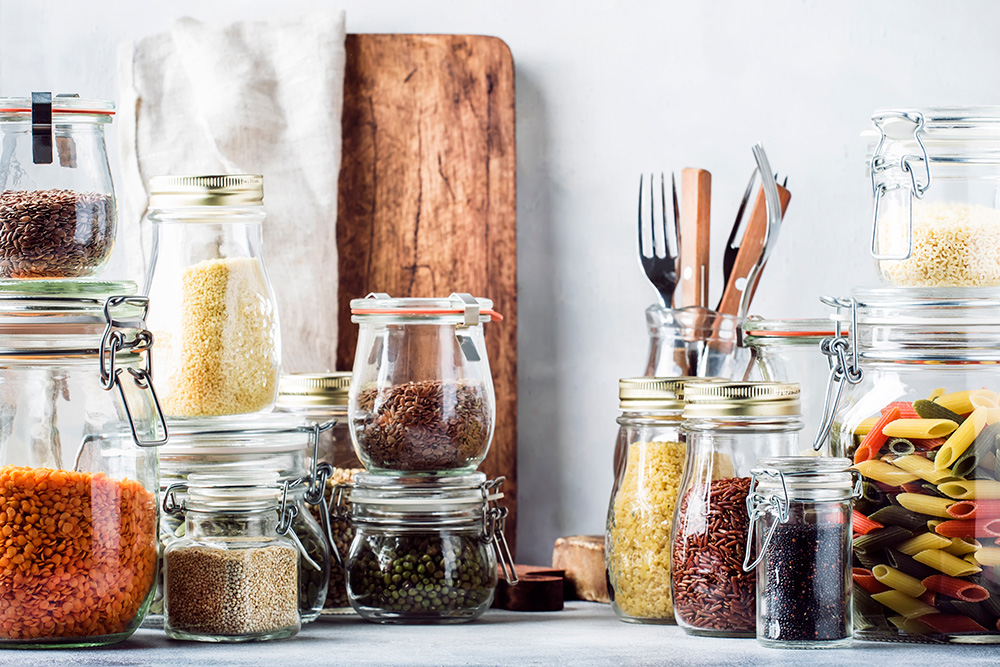
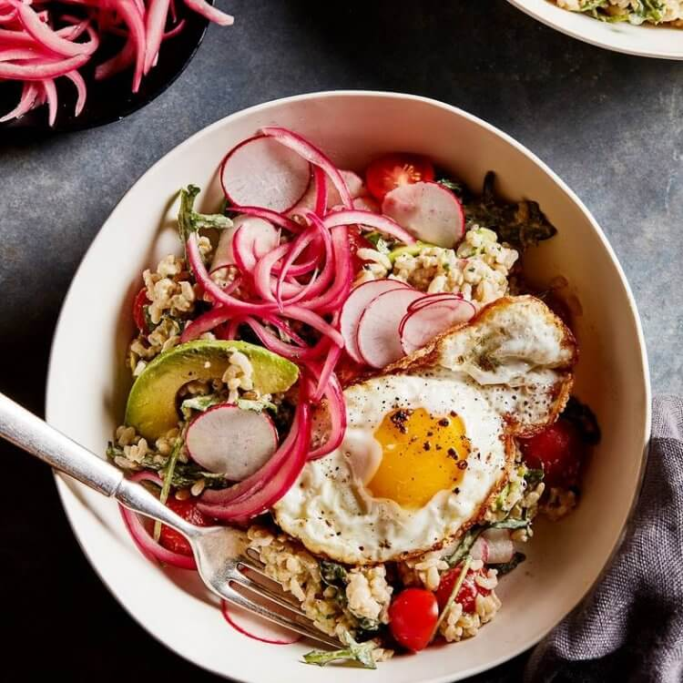
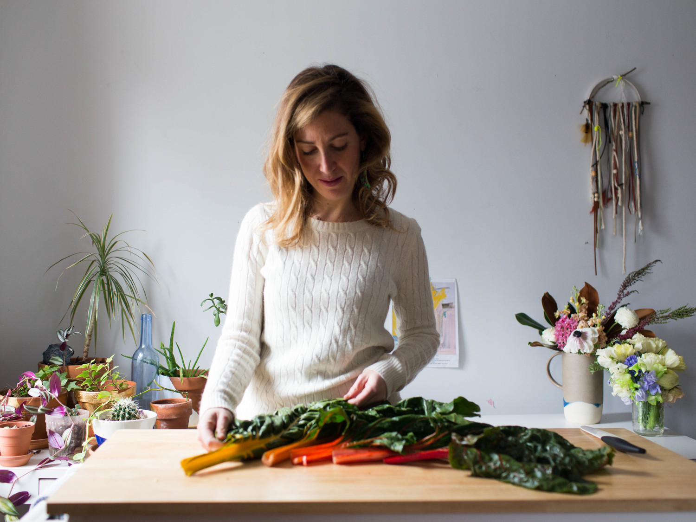
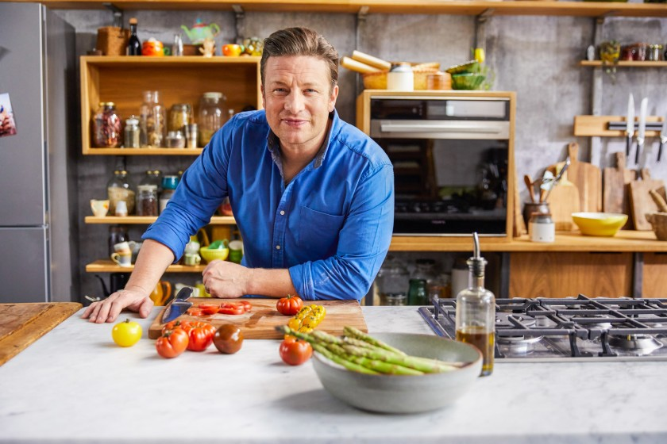

Staying Happy and Healthy
Conversations is not cancelled.
Relationship is not cancelled.
Love is not cancelled.
Food is not cancelled.
Hope is not cancelled.
May we lean into the good stuff that remains.
Breakfast
53 Breakie Ideas from NYT
Lunch
30 Lunch Ideas from NYT
Dinner
‘Pantry Recipes from NYT’:
Warming Stews and Soups
Fun Reciepes To Try
Buzzfeed Tasty Youtube Channel:
Easy Pantry Meals Real People Are Cooking Right Now
Chrissy Teigen's Food blog: John Legend's foodie wife (if you don't know who she is)
Tiny Turnips Kitchen: In-home culinary classes and easy recipes
Jamie Oliver's Coronavirus Lockdown Tips for Cooking & Food Shopping: